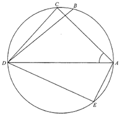

Circle Geometry — Angles in the Same Segment & Equal Chords
Circle (ABCDE)ChordsAC = BD∠AED = 96°∠BDC = 14°∠CAD = x
Question
In the figure, ABCDE is a circle. If $AC = BD$, $\angle AED = 96^\circ$ and
$\angle BDC = 14^\circ$, then $\angle CAD =$
A. $41^\circ$
B. $44^\circ$
C. $49^\circ$
D. $55^\circ$

Figure (original exam diagram)
💡 Hints: (1) Angles subtended by the same chord at the circumference are equal.
(2) Equal chords cut off equal arcs; equal arcs subtend equal angles at the circumference.
STEP 1 · Set up the unknown
Let $\angle CAD = x$.
This is the angle we want, and it will be the pivot for the whole argument.
STEP 2 · Angles in the same segment
Angles in the Same Segment\(\angle CED=\angle CAD,\qquad \angle BEC=\angle BDC\)Each pair stands on the same chord, \(CD\) and \(BC\) respectively.
Chord $CD$ subtends $\angle CAD$ at $A$ and $\angle CED$ at $E$.
$$\angle CED = \angle CAD = x \quad (\angle\text{s in the same segment})$$
Chord $BC$ subtends $\angle BDC$ at $D$ and $\angle BEC$ at $E$.
$$\angle BEC = \angle BDC = 14^\circ \quad (\angle\text{s in the same segment})$$
Both pairs sit on the same arc, so they must be equal.
Similarly, ray $EB$ lies inside $\angle CED$, giving
$$\angle BED = \angle CED + \angle BEC = x + 14^\circ$$
STEP 4 · Use AC = BD
Equal Chords Subtend Equal Angles\(AC=BD\ \Longrightarrow\ \angle AEC=\angle BED\)Equal chords cut off equal arcs, so the angles they subtend at \(E\) are equal.
Given $AC = BD$, the chords are equal, so they cut off equal arcs:
$$\widehat{AC} = \widehat{BD}$$
Equal arcs subtend equal angles at the circumference, therefore
$$\angle AEC = \angle BED$$
STEP 5 · Solve for x
Substitute the expressions from Step 3 into the equality from Step 4:
$$96^\circ - x = x + 14^\circ$$
$$96^\circ - 14^\circ = 2x$$
$$2x = 82^\circ \quad\Rightarrow\quad x = 41^\circ$$
Answer
∠CAD = 41° → Option A
PRACTICESimilar question — try it yourself
Question. In the figure, \(A\), \(B\), \(C\), \(D\), \(E\) lie on a circle with \(AC=BD\). If \(\angle AED=104^{\circ}\) and \(\angle BDC=18^{\circ}\), find \(\angle CAD\).
Show the worked solution
Step 1. Let \(\angle CAD=x\).
Step 2. Angles in the same segment: \(\angle CED=\angle CAD=x\) and \(\angle BEC=\angle BDC=18^{\circ}\).
Step 3. \(\angle AEC=104^{\circ}-x\) and \(\angle BED=x+18^{\circ}\).